אודות אקו אויל
אנחנו כאן כי התעשייה צריכה פתרון אמיתי.
אקו אויל הינה מתקן ארצי מהגדולים והמובילים בישראל לטיפול בשפכים תעשייתיים, פסולות שומניות, מי תהליך וחומרים מסוכנים — הממוקם בסמוך למתקן טיהור שפכים חיפה וקריות.
מאז 2002 אנחנו מטפלים במה שאחרים לא יכולים — השפכים התעשייתיים הכבדים והמורכבים שמערכות הביוב העירוניות אינן מסוגלות לקלוט.
אקו אויל נוסדה על ידי קבוצת שותפים שזיהו צורך אמיתי בשוק וחברו יחד כדי לתת לו מענה מקצועי, ישר ויעיל.
מה אנחנו עושים
אנחנו קולטים את כלל השפכים והפסולות המגיעים מהתעשייה — החל מזרמים צמחיים ממסעדות ועד חומצות, בסיסים וחומרים מסוכנים — ומעבירים אותם תהליך טיפול מקיף.
בתהליך אנחנו מפרידים בין מוצק לנוזל ומטפלים בכל חלק בנפרד: הנוזל המטוהר מועבר למתקן טיהור שפכים חיפה וקריות, שם ממשיך תהליך הטיהור עד להפיכתו למים אפורים לחקלאות ולהשקיה. המוצקים מנותבים לפי רמת הסיכון שלהם — זרמים צמחיים מגיעים לייצור קומפוסט, פסולות מתאימות מיוצאות לאירופה לייצור אנרגיה, ורק מה שאין לו שום שימוש אחר מועבר להטמנה.
הצוות שלנו
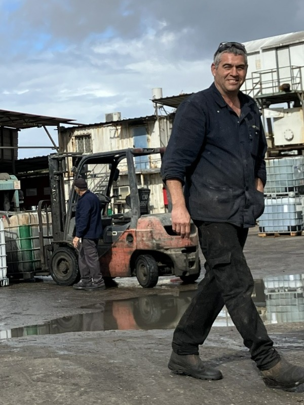
יואב טואג
מנכ"ליואב טואג עומד בראש אקו אויל מאז 2014, ובמהלך 12 שנות כהונתו הוביל את החברה לצמיחה עקבית ולמעמד מוביל בתחום טיפול השפכים והפסולות התעשייתיות בישראל.
יואב משלב ניהול אסטרטגי עם נוכחות שוטפת בשטח — היכרות מעמיקה עם כל שלב בתהליך התפעולי מאפשרת לו לזהות הזדמנויות לשיפור ולהוביל חדשנות מעשית. בין הישגיו: תכנון והקמה עצמית של מתקן שטיפת המיכליות, פיתוח תהליך מייעל לטיפול בזרם הצמחי, והקמת מערך אקו דיפו מאפס — כולם נולדו מתוך מחשבה מעמיקה, עבודה ידנית ומחויבות אמיתית.
יואב הוא אוטודידקט שרכש ידע מעמיק בכימיה והנדסת מתקנים — ידע שהפך את אקו אויל לגורם מוסמך שהרשויות נועצות בו. המפעל מוכר כמשק חיוני לשעת חירום, ויואב עצמו נקרא לייעץ במהלך אירועי חומ"ס מורכבים ברמה הלאומית.
12 שנות ניהול רצופות, עם צמיחה בכל שנה — גם בשנים הקשות ביותר — אומרות הכל.
מתקן ליטוש שפכים — ייזום, תכנון והובלה הנדסית על ידי מנכ"ל החברה, וביצוע מלא במערך הייצור הפנימי
המתקן תוכנן הנדסית ביוזמת המנכ"ל והוקם במלואו במחלקת המסגרות שלנו — דוגמה ליכולת ההנדסית והתפעולית של אקו אויל לפתח פתרונות מותאמים מבית, ולחסוך משמעותית בעלויות לעומת רכש חיצוני.


מחלקת המסגרות בעבודה שוטפת
במקביל לפרויקטים החדשים, מחלקת המסגרות של אקו אויל מבצעת באופן שוטף עבודות תחזוקה, שיפוץ והתאמה למתקני המפעל הקיימים — מה שמאפשר לנו לשמור על כשירות תפעולית מלאה לאורך זמן.

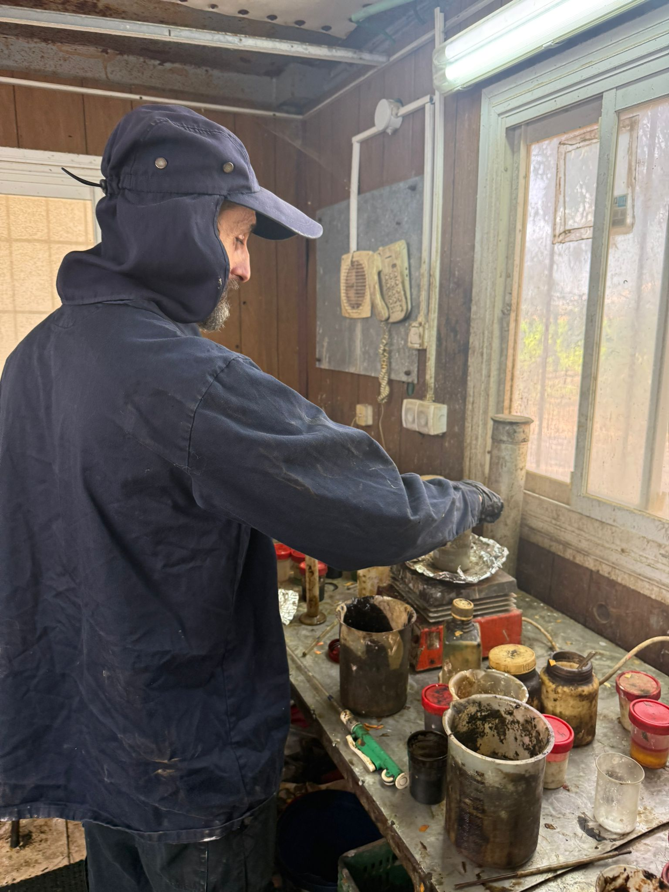
מאיר בנאי
מהנדס כימיה ומנהל המעבדהמאיר, בוגר הטכניון בהנדסת כימיה, מנהל את המעבדה הכימית של אקו אויל ואת המחלקה לטיפול בחומרים מסוכנים.
המעבדה היא הלב המקצועי של המפעל. כל חומר שנכנס לאתר עובר דגימה ואנליזה לפני הפריקה — כדי לאמת את הסיווג המוצהר ולהבטיח מעקב מדויק לאורך כל התהליך. לקוחות המפנים חומרים בקוביות עוברים בדיקה פרטנית לכל קובייה, ורק לאחר קבלת תוצאות המעבדה נקבע הסיווג הסופי ומסלול הטיפול המתאים.
אחריות מאיר היא לוודא שכל חומר מגיע לתהליך הנכון — החלטה שמשפיעה הן על איכות הטיפול והן על עמידה בדרישות הרגולטוריות.
דגימה לפני פריקה — בקרת איכות בכניסה למפעל
כל ביובית, אריזה או קוביה שנכנסת לאתר עוברת דגימה ואנליזה במעבדה לפני הפריקה — תהליך שמבטיח שכל חומר מקבל את מסלול הטיפול הנכון, ושההצהרה של המוביל אכן תואמת את התכולה בפועל.

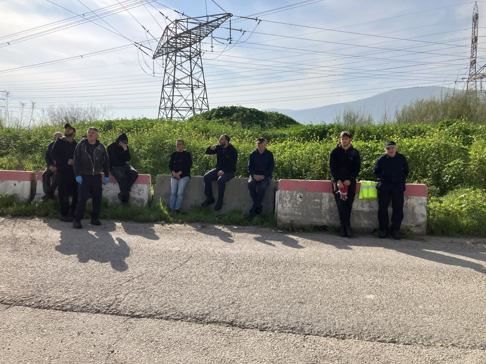
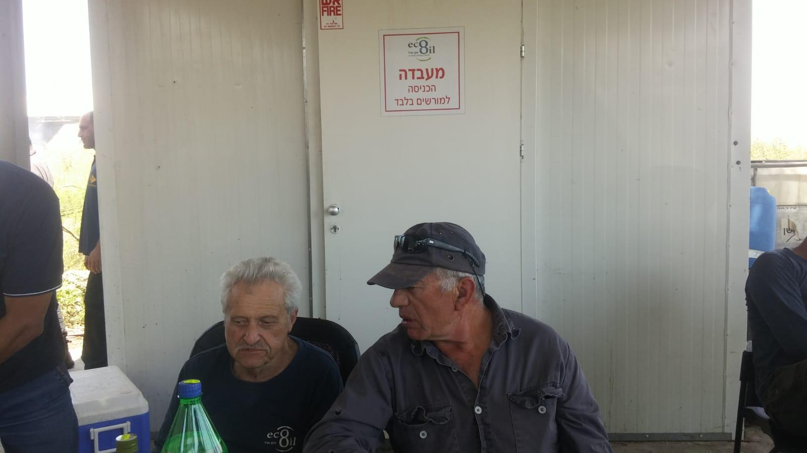
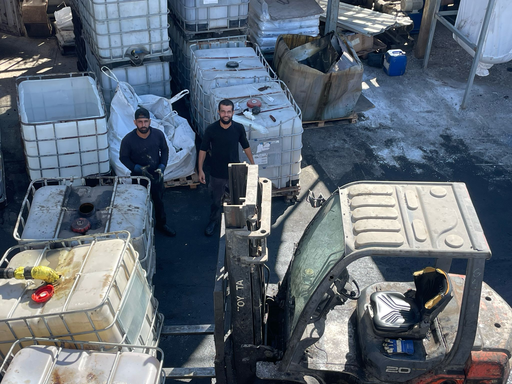
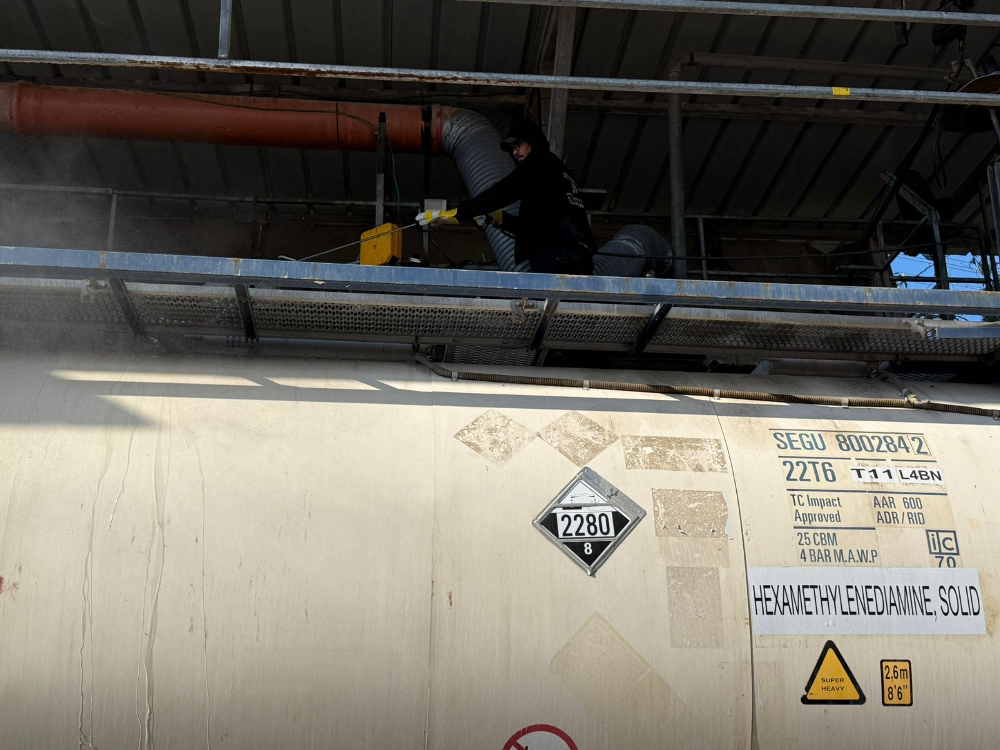

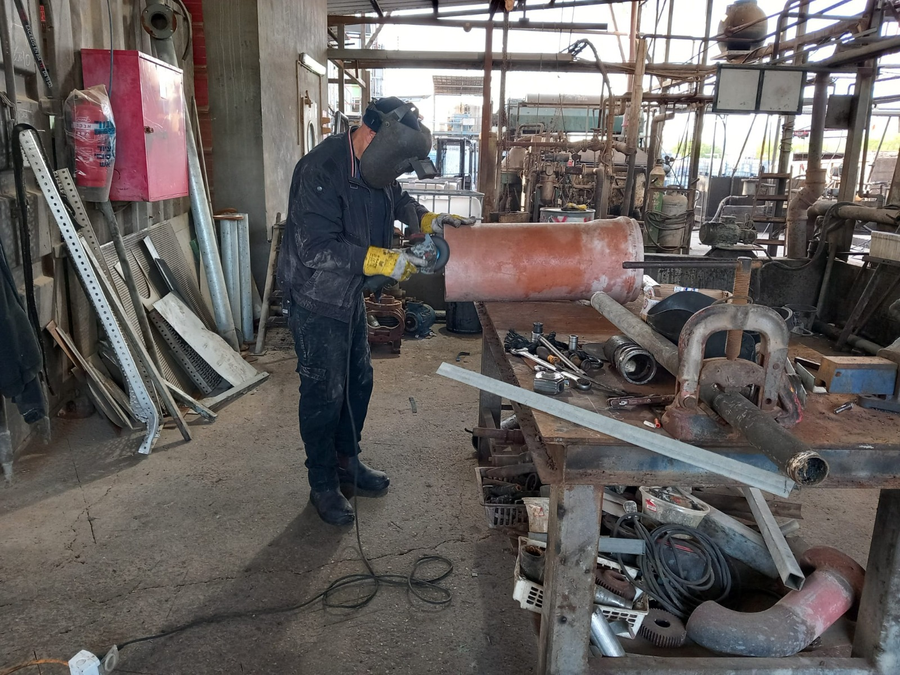
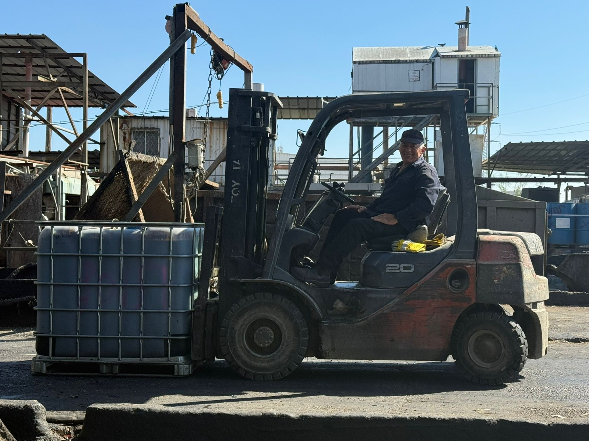

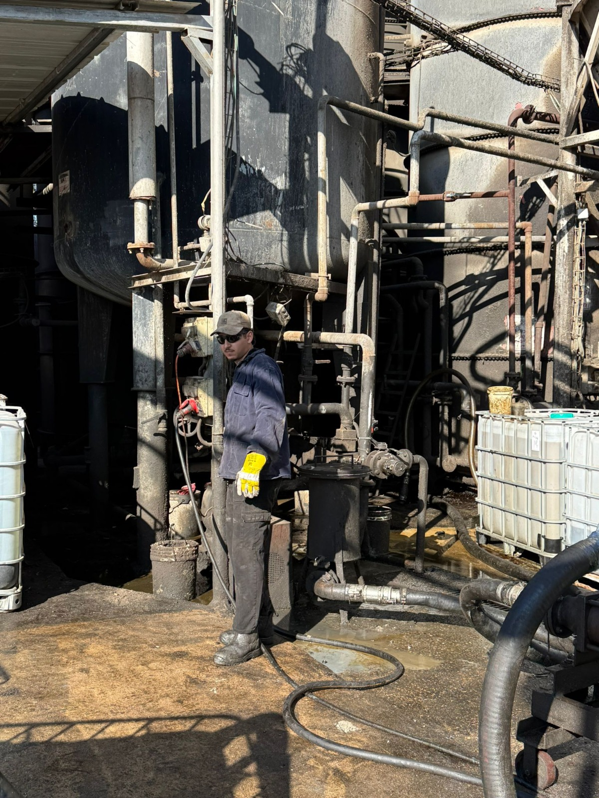
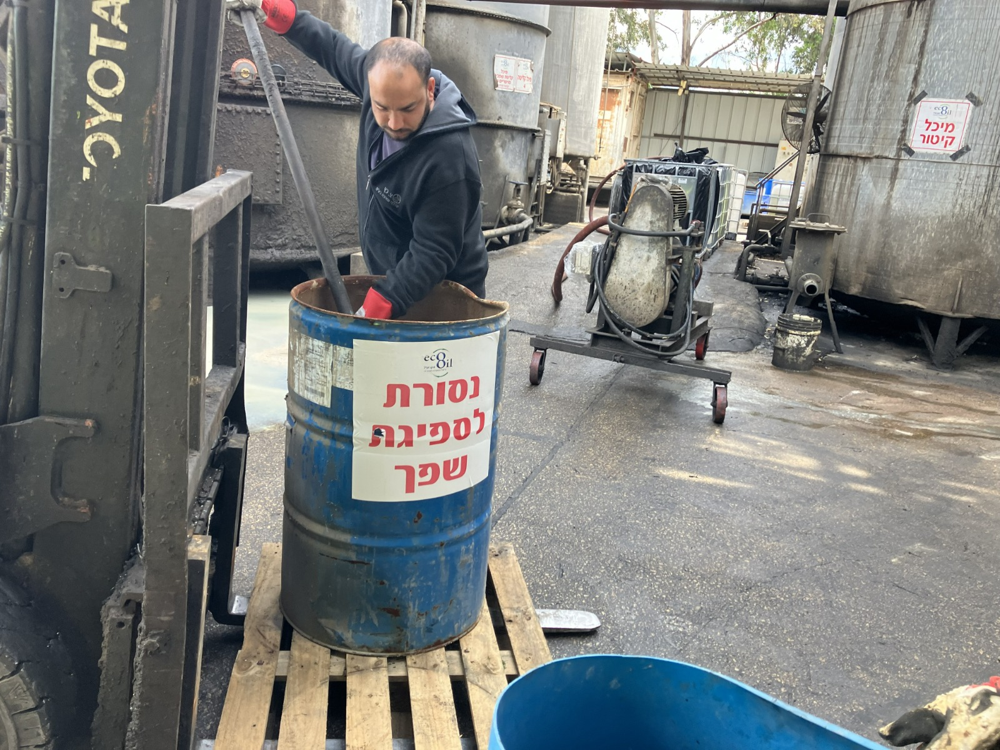
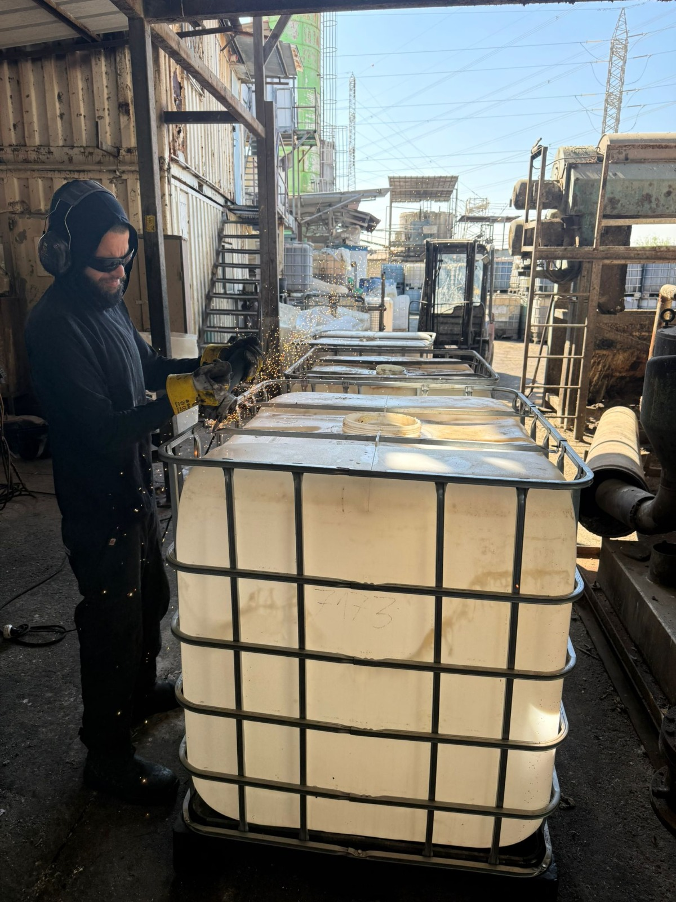

הצוות שלנו
מאחורי כל תהליך עומד צוות מקצועי ומסור — בין אם במפעל הטיפול בשפכים ובפסולות התעשייתיות של אקו אויל, ובין אם במתקן השטיפה ובמערך האחסון והתיקונים של אקו דיפו. מפעילי המתקנים, אנשי השטח ועובדי המשרד מגיעים כל יום עם מחויבות אמיתית לעבודה מדויקת ולשירות ברמה גבוהה — ומבטיחים שכל לקוח מקבל מענה מהיר, מכבד ומקצועי.
אקו אויל גאה להיות מפעל מוכר להעסקת חיילים משוחררים. אנחנו רואים בכך הזדמנות אמיתית — ומממנים הכשרה מקצועית מלאה לעובדים החדשים, לרבות רישיונות הפעלת מלגזה, הכשרות מסגרות וכישורים נוספים הנדרשים לעבודה במפעל.חיילים משוחררים מביאים איתם משמעת ורצון כן לעבוד ולהתפתח — ואנחנו שמחים לתת להם את הכלים לעשות זאת.
למה לבחור באקו אויל
עובדים ישר ובמקצועיות - תמיד
אנחנו גאים להיות מפעל שעובד בשקיפות מלאה מול המשרד לאיכות הסביבה, ללא עיגול פינות וללא פשרות. השם שלנו מוכר ומהימן בקרב הגורמים המקצועיים והרגולטוריים — וזו תוצאה של שנים של עבודה עקבית ואחראית.
שירות אישי, מהיר ומכבד
אנחנו מאמינים שזמנו של הלקוח יקר. לכן אין אצלנו תורים ארוכים, אין חוסר יעילות ואין הפתעות. מגיעים אלינו — מקבלים שירות.
חדשנות שמוזילה עלויות
אנחנו לא עומדים במקום. כשזיהינו הזדמנות לייעל את תהליך הטיפול בזרם הצמחי — השקענו חודשים בפיתוח פתרון פנימי שהוביל להורדת מחיר משמעותית לכלל המובילים שעובדים איתנו.
המחויבות שלנו
אנחנו מחויבים לשלושה דברים: לסביבה, לחוק ולכם.
אקו אויל מנפיקה אישורי טיפול על כל פינוי שפכים המתבצע במתקנה — אישורים המוכרים לצורך ביקורות המשרד להגנת הסביבה ומשרד הבריאות.
כי בסופו של דבר, מה שטוב לסביבה — טוב לכולנו.
מספרים שמדברים
מאז הקמתנו ב-2002 טיפלנו בעשרות אלפי טון של שפכים ופסולות תעשייתיות מדי שנה.
אנחנו מקבלים חמישה סוגי זרמים עיקריים: צמחי, מינרלי, אמולסיות, שפכים עירוניים ותעשייתיים וחומצות ובסיסים — וכל אחד עובר מסלול טיפול ייעודי המותאם לאופיו.
תוצאות הטיפול שלנו מגיעות ליעדים מוסמכים בלבד: ייצור קומפוסט, מתקני פינוי מורשים בישראל, ייצוא לאירופה לייצור אנרגיה, וטיהור מים לרמה המאפשרת השלמת טיפול במט"ש.
אפס פינויים לא מורשים — זה הסטנדרט שלנו.
מחפשים שותף אמין לטיפול בשפכים ובפסולות תעשייתיות? פנו אלינו.
צור קשר